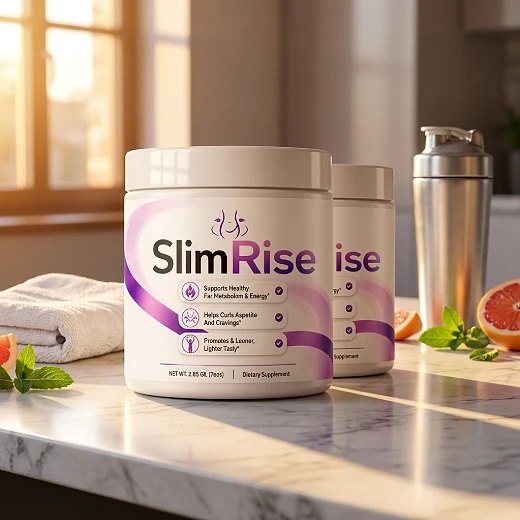
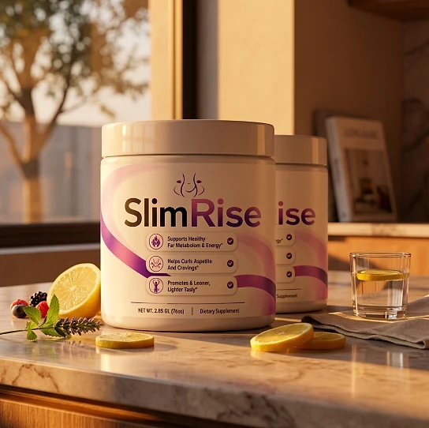
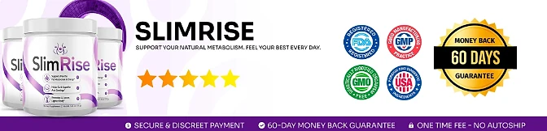

What Is SlimRise And How Does It Work?
SlimRise is a powdered dietary supplement designed to support healthy fat metabolism, appetite control, and daily energy for adults who want to address the constant cravings, low energy, and slow progress that can make weight goals feel out of reach through a natural, dependable approach — without complicated routines or temporary quick fixes.
It utilizes a simple daily scoop mixed with liquid that combines Green Tea Extract, Green Coffee Bean Extract, L-Carnitine, L-Theanine, Chromium, and vitamins D3, B6, and B12 to support metabolism, satiety, and calm, steady energy, helping the body maintain its natural balance throughout the day.
The ingredients in SlimRise are plant extracts, amino acids, a mineral, and vitamins that, according to the official website, work on three fronts: metabolism, the use of fat as energy, and food cravings, particularly for adults who prefer one simple daily drink over multiple products or complicated plans.
Rather than acting as a short-lived artificial fix, SlimRise focuses on a whole-formula approach, working gradually alongside daily routines to help maintain satiety between meals, craving control, and long-term wellness.
With consistent daily use, many users report fewer cravings during the day, steadier energy, and a gradual sense of control over their eating habits, especially when combined with a balanced diet, good sleep, and regular exercise.
From a practical standpoint, SlimRise is a daily functional drink for metabolic and appetite support designed to support wellness from within — helping you stay active, energized, and in control of your health.
Assembled in the USA and manufactured in an FDA-registered facility, according to the product label, SlimRise is designed for regular daily use, focusing on safety, purity, and quality for those seeking a natural, non-prescription route to healthy weight management.
SlimRise Ingredients
Every scoop of SlimRise (2.5 g) contains eight active ingredients listed on the Supplement Facts panel, each with its amount disclosed and chosen to support metabolism, appetite control, and energy as part of a consistent daily routine:
Green Tea Extract (300 mg): A Camellia sinensis extract standardized to 15% EGCG, associated with thermogenesis and antioxidant protection.
Green Coffee Bean Extract (200 mg): A Coffea arabica extract studied in connection with metabolism and weight management.
L-Carnitine (100 mg): A compound naturally present in the body, involved in carrying fatty acids into the cells to be used as energy.
L-Theanine (100 mg): An amino acid found in tea leaves, included to support calm focus alongside the natural caffeine.
Chromium (20 mcg, as Chromium Chloride): A trace mineral involved in carbohydrate metabolism.
Vitamin D3 (20 mcg), Vitamin B6 (1 mg), and Vitamin B12 (6 mcg): Vitamins that contribute to normal energy metabolism.
Together, these ingredients work synergistically to support craving control, satiety, and healthy weight management from within. The other ingredients on the label are maltodextrin, calcium silicate, and natural flavor.
SlimRise is designed for daily use, offering a natural, non-prescription approach to supporting metabolism and appetite, without complicated routines.
SlimRise Side Effects
SlimRise is generally considered well tolerated and is designed for adults of different ages and lifestyles who are looking for a safe, natural, and balanced approach to weight management, especially those who prefer an easy once-a-day drink to support metabolism, appetite, and well-being without resorting to risky solutions with severe side effects.
All ingredients used in SlimRise are described on the official website as naturally derived, without harmful chemical additives, and the label states that SlimRise is assembled in the USA and manufactured in an FDA-registered facility, reinforcing consistency, safety, and reliability.
With no widespread reports of serious side effects, SlimRise is generally considered a well-tolerated option. The formula contains natural caffeine from green tea and green coffee, and the official website itself suggests that people sensitive to stimulants start with half a serving to assess tolerance; it also recommends that anyone who takes medications for diabetes, high blood pressure, or heart problems show the label to their doctor first. It is not intended to diagnose, treat, cure, or prevent any disease, and individual results may vary.
According to the label, if you are under a physician's care or taking medication, you should consult your healthcare professional before using SlimRise, and if you are pregnant or nursing, or have a known medical condition, you should not use it without consulting a physician, ensuring it fits safely within your personal wellness plan.
SlimRise Dosage
The recommended SlimRise dosage is one scoop (2.5 g) a day mixed with 8 to 16 oz. of liquid, and it is designed to fit easily into a daily routine, making consistency simple and convenient. Formulated as an easy-to-mix powder, it requires no capsules to swallow and nothing complicated to prepare.
The recommended approach, as printed on the label, is to add one scoop of SlimRise to 8–16 oz. of liquid and mix thoroughly. For best results, the official website suggests taking it in the morning, preferably before breakfast or before physical activity, which also keeps the natural caffeine away from bedtime.
For best results, consistency is key. Each jar contains 2.65 oz. (75 g), or 30 servings, a one-month supply, and because nutritional support for metabolism builds gradually, many customers make it part of an ongoing wellness routine.
There is no need for complex schedules or multi-step routines. One simple daily drink is designed to build lasting support gradually alongside a balanced diet, good sleep, and an active lifestyle. The label also advises storing the jar in a cool, dry place below 86 °F (30 °C) and not using it if the safety seal is damaged or missing.
As with any dietary supplement, it's important not to exceed the recommended dose and to check the label on your jar. SlimRise works best when used regularly, combined with proper hydration, balanced nutrition, and healthy daily habits.
SlimRise – Refund Policy
You can order SlimRise with confidence, knowing that every purchase is protected by a 60-day guarantee from the date of purchase. This allows you to try the formula and decide if it delivers the support you expect.
According to the refund policy on the official website, refund requests can be made after a minimum trial period of 30 days and must be started within 60 days of the purchase date. Only sealed units are eligible, shipping and customs fees are not refunded, return shipping is paid by the customer, and a 20% restocking fee is deducted.
How the refund process works: If you decide SlimRise is not right for you, email customer support to request a return authorization code, then follow the return instructions provided. Once the returned items are received and verified, your refund will be issued to the original payment method, and you will receive a confirmation email.
Customer Support Contact Information: contact@customercs.com or +1 (507) 448-8190, as printed on the product label. The team typically replies to emails within 48 business hours.
Refund Processing Time: After your refund is processed, it may take 5 to 10 business days to appear on your statement, depending on your financial institution.
This refund policy is designed to give customers a clear and transparent experience when trying SlimRise.
SlimRise Customer Reviews
-
Michael Thompson — Houston, TXVerified Purchase – 6 Bottles
“I struggled with excess weight for years, which really affected my self-esteem. After using SlimRise for 3 months, I am now able to lose weight and keep my body in shape. It has revitalized my life and given me a new confidence.”
-
Sarah Rodriguez — Chicago, ILVerified Purchase – 6 Bottles
“... I often struggled with losing weight and managing my blood sugar. SlimRise has been a game-changer for me. After just 1 month of use, I noticed significant improvements in my metabolism and overall health. I feel like I’ve regained my energy!”
-
Lauren Rio — Seattle, WAVerified Purchase – 6 Bottles
“After menopause, I experienced severe weight gain and struggled to shed it. I thought my days of having a healthy body were over until I discovered SlimRise. After using it for 2 months, I’m now able to enjoy an active life and feel good about myself again. It has truly been a life-changing product.”
SlimRise – Where To Buy
SlimRise is sold through its official website, so if you decide to try it, it's important to be careful about where you purchase it. The official website is the only sales channel the manufacturer lists, and it does not point to marketplaces such as Amazon, eBay, or Walmart.
Listings on third-party platforms may look similar but cannot be verified as authentic, raising concerns about safety, quality, and ingredient freshness. Products purchased outside the official source may not be covered by the 60-day guarantee.
For this reason, most customers recommend purchasing SlimRise only through the official website. Buying directly from the official source ensures you receive the authentic original product, with access to customer support and the full guarantee. According to the official website, every purchase is a one-time order, with no automatic renewals, hidden fees, or surprise charges.
To avoid counterfeit batches and ensure maximum quality, always verify that you are ordering from the official SlimRise website before completing your purchase.
To ensure you’re getting the authentic product, most users choose to visit the official website.
Is SlimRise A Scam?
Based on what the official website and the product label disclose, SlimRise does not appear to be a scam. It is a real powdered supplement, sold through an established retailer, and formulated to support metabolism, appetite control, and healthy weight management as part of a consistent routine.
The ingredients used in SlimRise — Green Tea Extract, Green Coffee Bean Extract, L-Carnitine, L-Theanine, Chromium, and vitamins D3, B6, and B12 — are well known in the wellness field, and the label publishes a full Supplement Facts panel with the amount of each one for transparency.
In addition to its formula, SlimRise is assembled in the USA and manufactured in an FDA-registered facility, according to the product label, with a focus on safety, purity, and consistency.
Many users report fewer cravings and steadier energy throughout the day and an easy daily habit, making SlimRise a practical option for those seeking natural support for weight management. Results vary from person to person, and no supplement replaces a balanced diet, regular exercise, or medical care.
SlimRise is backed by a 60-day guarantee, and orders are one-time purchases with no automatic renewals, recurring charges, or hidden fees. The refund rules, including the sealed-unit requirement and the restocking fee, are published on the official website, which underscores the manufacturer's transparency with customers.
If you're looking for a simple daily drink to support metabolism, satiety, and well-being without complicated routines, SlimRise is worth considering — especially when purchased directly from the official website.
For those who want to verify product details or check current availability, the official SlimRise website remains the safest option.

Check Availability On Official Website
